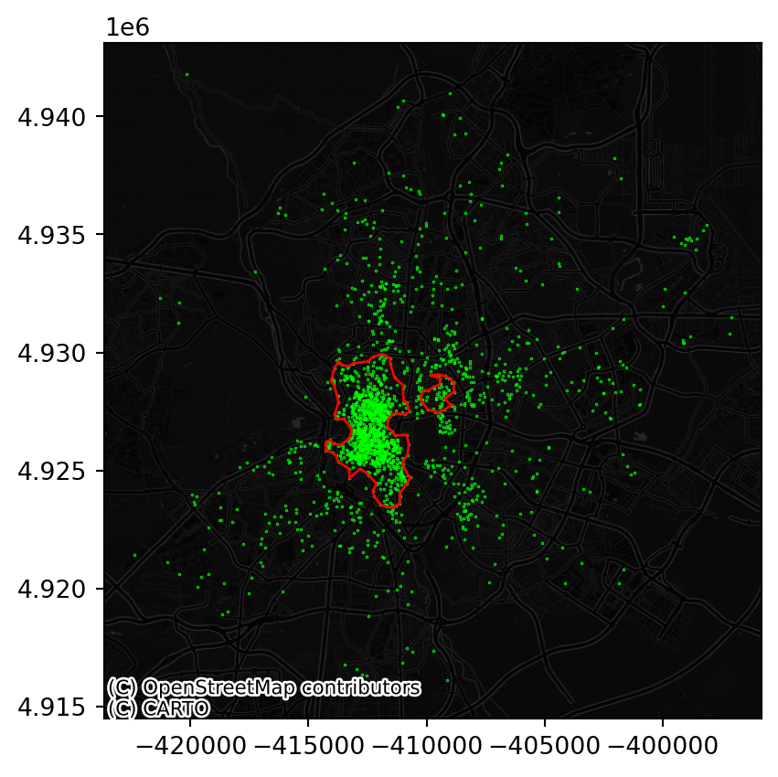
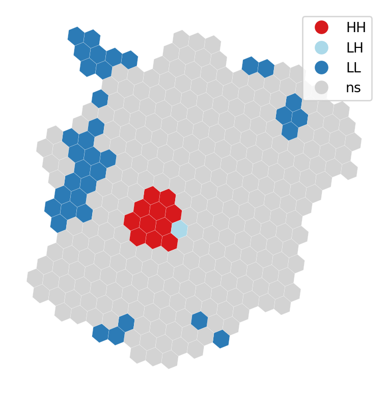

import pandas, geopandas
import numpy as np
import contextily
import tobler
import matplotlib.pyplot as plt4 Spatial feature engineering (part II)
In this second part of Spatial Feature Engineering, we turn to Map Synthesis. There is only one reading to complete for this block, from the GDS Book
4.1 Packages and modules
4.2 Data
If you want to read more about the data sources behind this dataset, head to the Datasets section.
Assuming you have the file locally on the path ../data/:
pts = geopandas.read_file("../data/madrid_abb.gpkg")We will be working with a modified version of pts:
- Since we will require distance calculations, we will switch to the Spanish official projection
- To make calculations in the illustration near-instantaneous, we will work with a smaller (random) sample of Airbnb properties (10% of the total)
db = pts.sample(
frac=0.1, random_state=123
).to_crs(epsg=25830)As you can see in the description, the new CRS is expressed in metres:
db.crs<Projected CRS: EPSG:25830>
Name: ETRS89 / UTM zone 30N
Axis Info [cartesian]:
- E[east]: Easting (metre)
- N[north]: Northing (metre)
Area of Use:
- name: Europe between 6°W and 0°W: Faroe Islands offshore; Ireland - offshore; Jan Mayen - offshore; Norway including Svalbard - offshore; Spain - onshore and offshore.
- bounds: (-6.0, 35.26, 0.01, 80.49)
Coordinate Operation:
- name: UTM zone 30N
- method: Transverse Mercator
Datum: European Terrestrial Reference System 1989 ensemble
- Ellipsoid: GRS 1980
- Prime Meridian: Greenwich4.3 Distance buffers
How many Airbnb’s are within 500m of each Airbnb?
from pysal.lib import weightsUsing DistanceBand, we can build a spatial weights matrix that assigns 1 to each observation within 500m, and 0 otherwise.
w500m = weights.DistanceBand.from_dataframe(
db, threshold=500, binary=True
)/Users/carmen/anaconda3/envs/geo-env-new/lib/python3.10/site-packages/libpysal/weights/weights.py:224: UserWarning:
The weights matrix is not fully connected:
There are 86 disconnected components.
There are 47 islands with ids: 6878, 16772, 15006, 1336, 3168, 15193, 1043, 5257, 4943, 12849, 10609, 11309, 10854, 10123, 3388, 9380, 10288, 13071, 3523, 15316, 3856, 205, 7720, 10454, 18307, 3611, 12405, 10716, 14813, 15467, 1878, 16597, 14329, 7933, 16215, 13525, 13722, 11932, 14456, 8848, 15197, 8277, 9922, 13072, 13852, 5922, 17151.
The number of neighbors can be accessed through the cardinalities attribute:
n_neis = pandas.Series(w500m.cardinalities)
n_neis.head()11297 213
2659 5
16242 21
15565 9
14707 159
dtype: int64fig, ax = plt.subplots()
db.assign(
n_neis=n_neis
).plot("n_neis", markersize=0.1, ax=ax)
plt.show()
Note
Challenge: Calculate the number of AirBnb properties within 250m of each other property. What is the average?
4.4 Distance rings
How many Airbnb’s are between 500m and 1km of each Airbnb?
w1km = weights.DistanceBand.from_dataframe(
db, threshold=1000, binary=True
)/Users/carmen/anaconda3/envs/geo-env-new/lib/python3.10/site-packages/libpysal/weights/weights.py:224: UserWarning:
The weights matrix is not fully connected:
There are 20 disconnected components.
There are 5 islands with ids: 4943, 12849, 15467, 13525, 11932.
Now, we could do simply a subtraction:
n_ring_neis = pandas.Series(w1km.cardinalities) - n_neisOr, if we need to know which is which, we can use set operations on weights:
w_ring = weights.w_difference(w1km, w500m, constrained=False)/Users/carmen/anaconda3/envs/geo-env-new/lib/python3.10/site-packages/libpysal/weights/weights.py:224: UserWarning:
The weights matrix is not fully connected:
There are 34 disconnected components.
There are 23 islands with ids: 3744, 4143, 4857, 4943, 6986, 8345, 8399, 9062, 10592, 10865, 11574, 11613, 11785, 11840, 11932, 12015, 12635, 12714, 12849, 13091, 13317, 13525, 15467.
And we can confirm they’re both the same:
(pandas.Series(w_ring.cardinalities) - n_ring_neis).sum()0
Note
Challenge: Can you create a plot with the following two lines?
- One depicting the average number of properties within a range of 50m, 100m, 250m, 500m, 750m
- Another one with the increase of average neighbors for the same distances above
4.5 Cluster membership (points)
We can use the spatial configuration of observations to classify them as part of clusters or not, which can then be encoded, for example, as dummy variables in a model.
These magic numbers need to be pre-set and you can play with both min_pct (or min_pts directly) and eps to see how they affect the results (spoiler: a lot!).
from sklearn.cluster import DBSCAN
min_pct = 2
min_pts = len(db) * min_pct // 100
eps = 500We will illustrate it with a minimum number of points of min_pct % of the sample and a maximum radious of eps metres.
model = DBSCAN(min_samples=min_pts, eps=eps)
model.fit(
db.assign(
x=db.geometry.x
).assign(
y=db.geometry.y
)[['x', 'y']]
);We will attach the labels to db for easy access:
db["labels"] = model.labels_We can define boundaries to turn point clusters into polygons if that fits our needs better:
The code in the next cell is a bit more advanced than expected for this course, but is used here as an illustration.
from pysal.lib import cg
boundaries = []
cl_ids = [i for i in db["labels"].unique() if i!=-1]
for cl_id in cl_ids:
sub = db.query(f"labels == {cl_id}")
cluster_boundaries = cg.alpha_shape_auto(
np.array(
[sub.geometry.x, sub.geometry.y]
).T,
)
boundaries.append(cluster_boundaries)
boundaries = geopandas.GeoSeries(
boundaries, index=cl_ids, crs=db.crs
)And we can see what the clusters look like:
fig, ax = plt.subplots()
db.to_crs(
epsg=3857
).plot(
markersize=0.1, color="lime"
)
boundaries.to_crs(
epsg=3857
).plot(
ax=ax, edgecolor="red", facecolor="none"
)
contextily.add_basemap(
ax,
source=contextily.providers.CartoDB.DarkMatterNoLabels
)
plt.show()
Note
Challenge: How does the map above change if you require 5% of points instead of 2% for a candidate cluster to be considered so?
4.6 Cluster membership (polygons)
We can take a similar approach as above if we have polygon geographies instead of points. Rather than using DBSCAN, here we can rely on local indicators of spatial association (LISAs) to pick up spatial concentrations of high or low values.
For the illustration, we will aggregate the location of Airbnb properties to a regular hexagonal grid, similar to how we generated it when transferring from polygons to polygons. First we create a polygon covering the extent of points:
one = geopandas.GeoSeries(
[cg.alpha_shape_auto(
np.array(
[db.geometry.x, db.geometry.y]
).T,
)],
crs=db.crs
)Then we can tessellate:
abb_hex = tobler.util.h3fy(
one, resolution=8
)/Users/carmen/anaconda3/envs/geo-env-new/lib/python3.10/site-packages/pyproj/crs/crs.py:1293: UserWarning:
You will likely lose important projection information when converting to a PROJ string from another format. See: https://proj.org/faq.html#what-is-the-best-format-for-describing-coordinate-reference-systems
And obtain a count of points in each polygon:
counts = geopandas.sjoin(
db, abb_hex
).groupby(
"index_right"
).size()
abb_hex["count"] = counts
abb_hex["count"] = abb_hex["count"].fillna(0)
fig, ax = plt.subplots()
abb_hex.plot("count", scheme="fisherjenks")
plt.show()To identify spatial clusters, we rely on esda:
from pysal.explore import esda/Users/carmen/anaconda3/envs/geo-env-new/lib/python3.10/site-packages/spaghetti/network.py:40: FutureWarning:
The next major release of pysal/spaghetti (2.0.0) will drop support for all ``libpysal.cg`` geometries. This change is a first step in refactoring ``spaghetti`` that is expected to result in dramatically reduced runtimes for network instantiation and operations. Users currently requiring network and point pattern input as ``libpysal.cg`` geometries should prepare for this simply by converting to ``shapely`` geometries.
/Users/carmen/anaconda3/envs/geo-env-new/lib/python3.10/site-packages/tqdm/auto.py:22: TqdmWarning:
IProgress not found. Please update jupyter and ipywidgets. See https://ipywidgets.readthedocs.io/en/stable/user_install.html
And compute the LISA statistics:
w = weights.Queen.from_dataframe(abb_hex)
lisa = esda.Moran_Local(abb_hex["count"], w)/var/folders/79/65l52xsj7vq_4_t_l6k5bl2c0000gn/T/ipykernel_34133/2473509840.py:1: FutureWarning:
`use_index` defaults to False but will default to True in future. Set True/False directly to control this behavior and silence this warning
For a visual inspection of the clusters, splot:
from pysal.viz import splot
from splot.esda import lisa_clusterlisa_cluster(lisa, abb_hex, p=0.01)
plt.show()
And, if we want to extract the labels for each polygon, we can do so from the lisa object:
lisa.q * (lisa.p_sim < 0.01)array([0, 0, 0, 0, 0, 3, 0, 0, 0, 0, 0, 1, 0, 0, 0, 0, 0, 0, 0, 3, 0, 0,
0, 0, 0, 0, 0, 0, 0, 0, 0, 0, 3, 3, 3, 0, 0, 0, 0, 0, 0, 0, 0, 0,
0, 0, 0, 0, 3, 0, 0, 0, 0, 0, 0, 0, 0, 0, 0, 0, 0, 0, 0, 0, 0, 0,
0, 0, 0, 0, 0, 0, 0, 0, 0, 0, 0, 0, 0, 0, 0, 0, 0, 3, 0, 3, 3, 0,
0, 0, 1, 0, 0, 0, 0, 0, 0, 3, 0, 0, 3, 0, 2, 0, 0, 0, 0, 0, 0, 0,
0, 0, 0, 0, 0, 3, 3, 0, 0, 0, 0, 0, 0, 0, 0, 0, 0, 0, 0, 0, 0, 3,
0, 0, 0, 0, 0, 0, 0, 3, 1, 0, 0, 3, 0, 0, 0, 0, 0, 0, 0, 0, 3, 0,
0, 0, 0, 0, 1, 0, 0, 0, 1, 0, 0, 0, 3, 0, 0, 3, 0, 0, 3, 3, 0, 0,
0, 0, 0, 0, 0, 0, 0, 0, 0, 0, 3, 0, 0, 3, 3, 0, 0, 0, 0, 3, 0, 0,
0, 0, 0, 0, 0, 3, 0, 0, 0, 0, 0, 1, 0, 0, 0, 0, 0, 3, 0, 0, 1, 0,
0, 0, 0, 0, 0, 0, 0, 0, 0, 0, 0, 0, 0, 1, 3, 3, 0, 0, 0, 0, 0, 0,
0, 0, 0, 0, 0, 0, 0, 0, 0, 3, 3, 0, 0, 0, 0, 0, 0, 0, 0, 0, 0, 1,
0, 0, 0, 1, 3, 0, 0, 0, 0, 0, 0, 0, 0, 0, 3, 0, 0, 3, 0, 0, 0, 0,
0, 0, 3, 0, 0, 0, 0, 3, 0, 0, 0, 0, 3, 0, 0, 0, 0, 0, 0, 0, 3, 1,
0, 0, 0, 0, 0, 0, 0, 0, 3, 0, 0, 0, 0, 0, 0, 0, 0])4.7 Next steps
If you want a bit more background into some of the techniques reviewed in this block, the following might be of interest:
- This block of the GDS Course {cite}
darribas_gds_coursewill introduce you to more techniques like the LISAs seen above to explore the spatial dimension of the statistical properties of your data. If you want a more detailed read, this Chapter of the GDS Book {cite}reyABwolfwill do just that. - This block of the GDS Course {cite}
darribas_gds_coursewill introduce you to more techniques like the LISAs seen above to explore the spatial dimension of the statistical properties of your data. If you want a more detailed read, this Chapter of the GDS Book {cite}reyABwolfwill do just that. - This block of the GDS Course {cite}
darribas_gds_coursewill introduce you to more techniques for exploring point patterns. If you want a more comprehensive read, this Chapter of the GDS Book {cite}reyABwolfwill do just that.